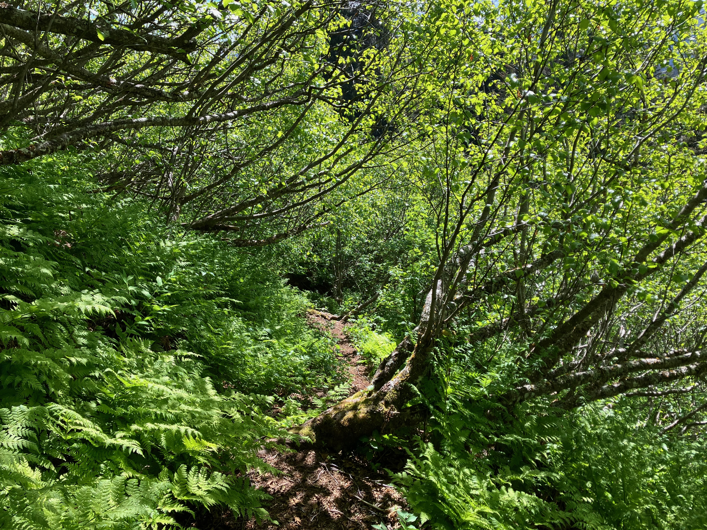
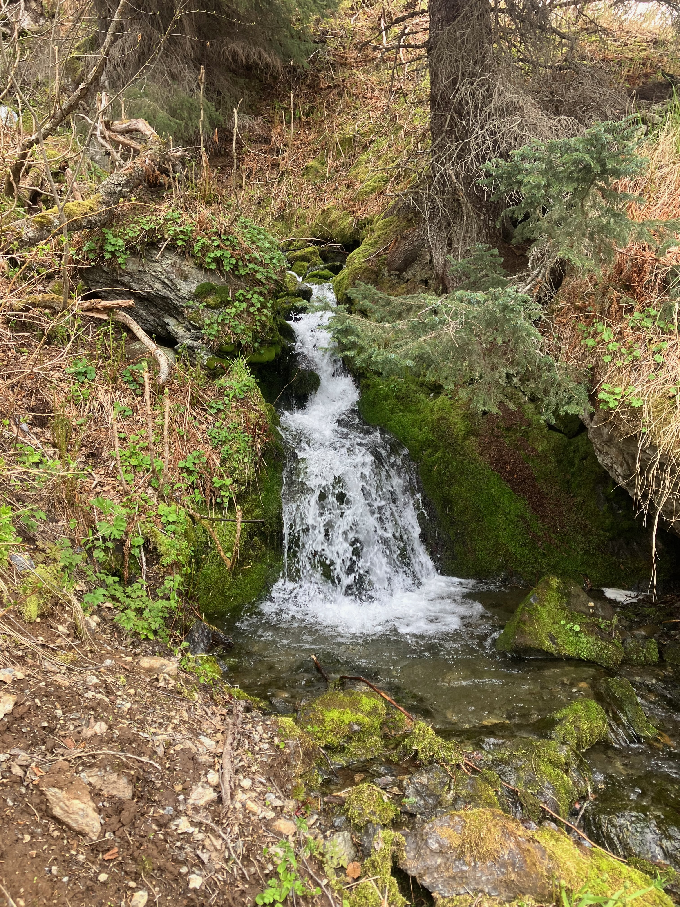

Trail Building · Wilderness
Trail projects, backcountry trips, and the landscapes that keep pulling me back. Both the work of building trails and the act of being out in wilderness.


Trail maintenance on Rocky Ridge Trail near downtown Seldovia.
Describe the trip — the route, conditions, what you noticed about the landscape. This is a good place to connect what you see in the field to your research interests if relevant.